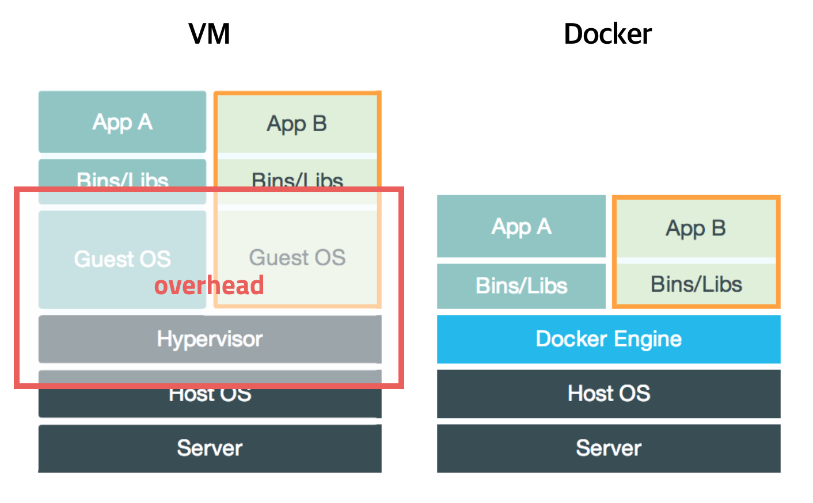

도커란 무엇인가는 여기에 아주 잘 나와있다.
- 기존의 Virtual Machine(VM)은 운영체제 위에 새로운 운영체제를 동작시키기 때문에 리소스 적인 측면에서 매우 많은 손해가 있다(보안의 장점이 있긴 한다)

이미지 출처 - 도커는 컨테이너를 이용하여 프로세스 단위로 가상화를 한다.
- 도커에 새로운 ubuntu 컨테이너를 사용한다고 해도 새로운 kernel이 생기는 것은 아니다. 관련된 내용은 shared kenrel of docker를 참고하자.
- 이전에는 LXC(리눅스 컨테이너)를 사용했지만 현재는 libcontainer를 사용한다
- 이미지 : 컨테이너 실행에 필요한 의존성 파일, 설정 값등을 포함하고 있다. 이를 이용하여 새로운 컨테이너를 생성하기도 하고 배포하기도 한다. url 방식으로 관리한다.
- 레이어 : 이미지를 여러가지의 레이어로 분할하여 배포, 다운을 한다. 이미지의 특정 부분이 수정되었을 경우에 그 부분의 레이어만 다시 받으면 된다. 도커 기본 이미지란 무엇인가
- 도커의 이미지를 배포하게 되면 의존성을 신경쓸 필요 없다. 새로운 서버를 만들게 되면 만들어 놓은 이미지를 다운 받아서 컨테이너를 생성하기만 하면 된다.
- 배포에 이용하는 도커 이미지는 docker hub에서 다운받아 사용할 수 있다.
- Dockerfile : 이미지 생성 과정을 적는 파일. 설치, 의존성 같은 부분을 적어서 쉽게 수정하고 관리할 수 있게 해준다.
설치
Linux
- 리눅스이 경우 다음 명령어를 시행하면 된다
curl -fsSL https://get.docker.com/ | sudo sh
Windows
- docker for Windows를 설치하자.